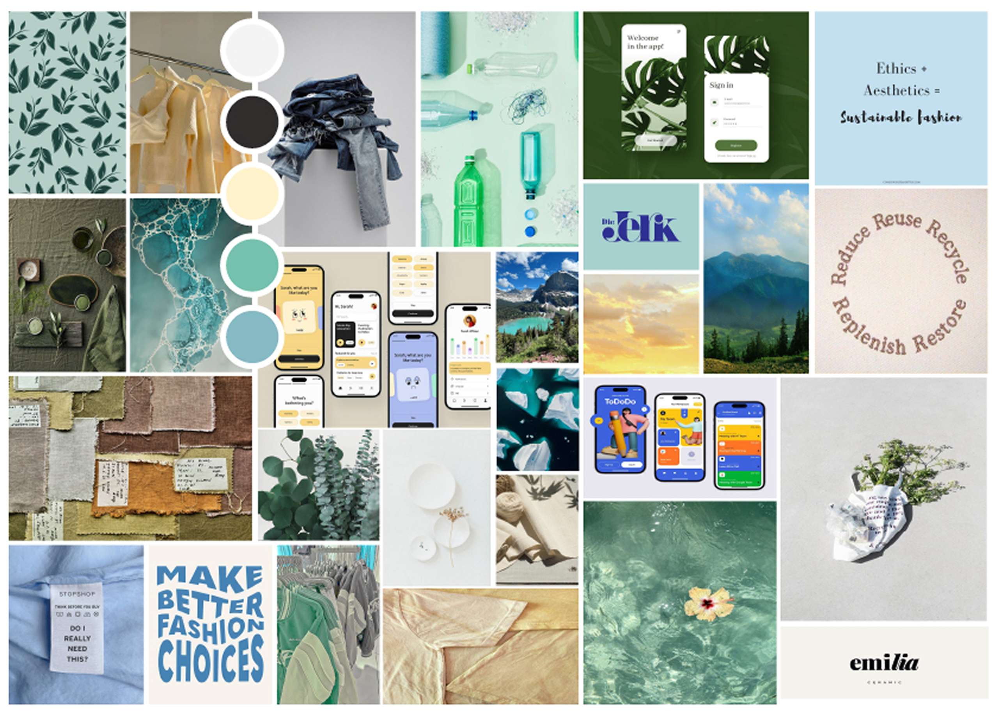
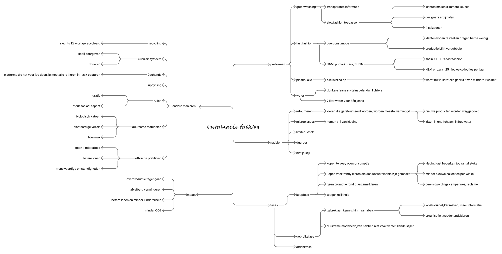
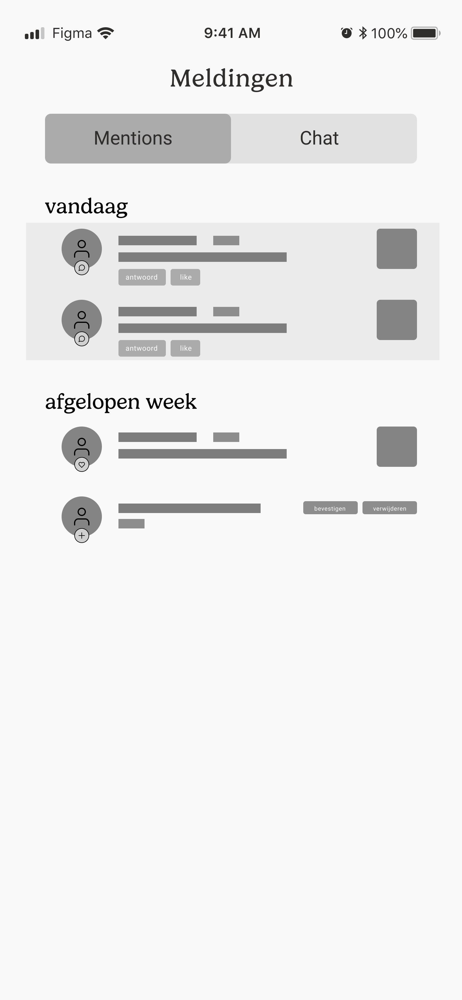
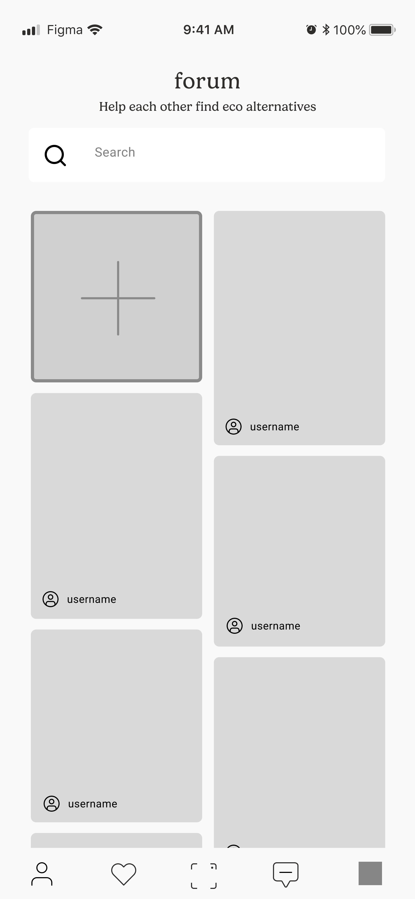
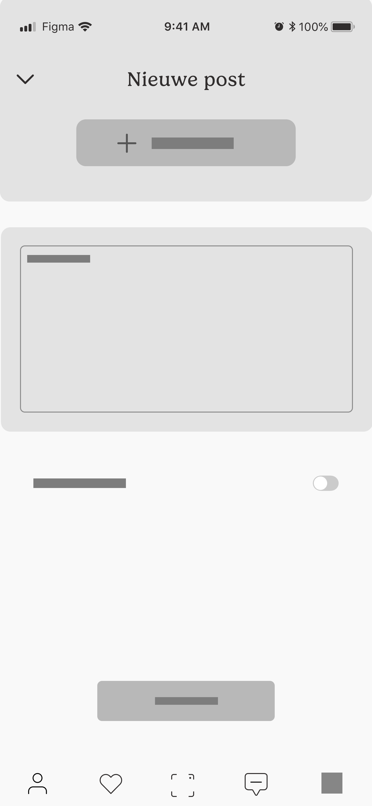
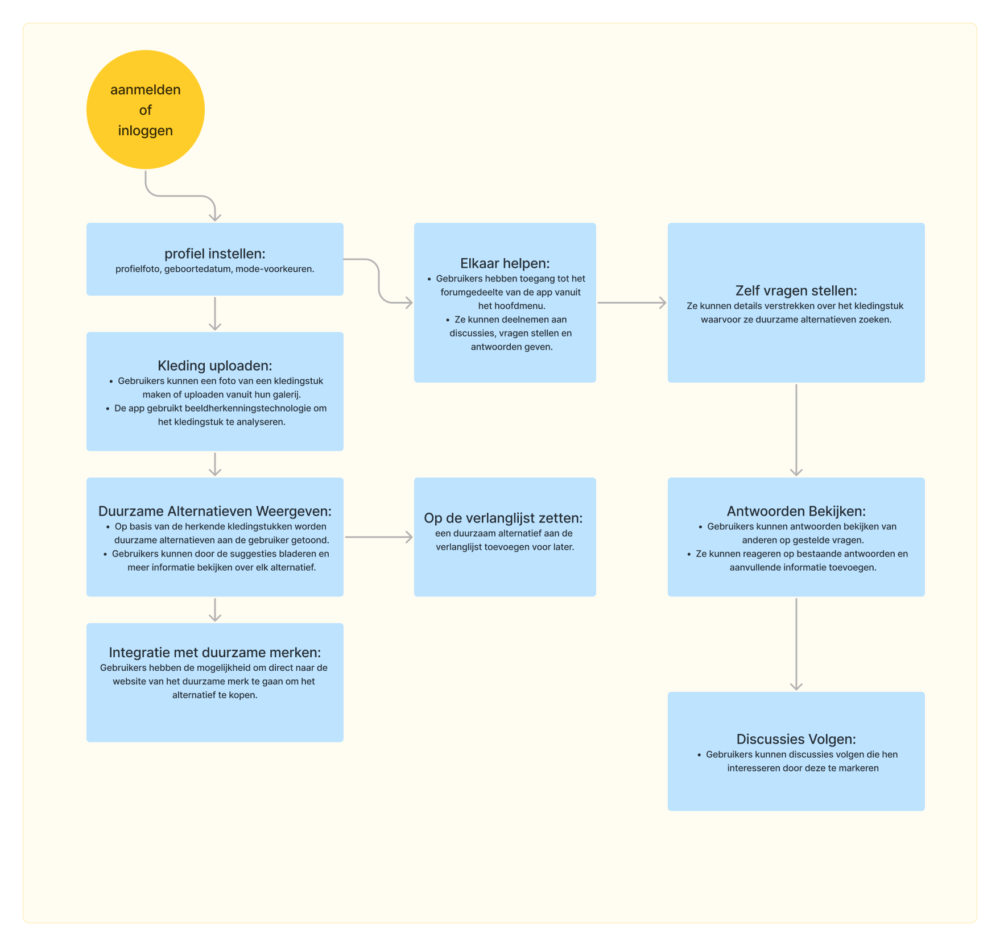
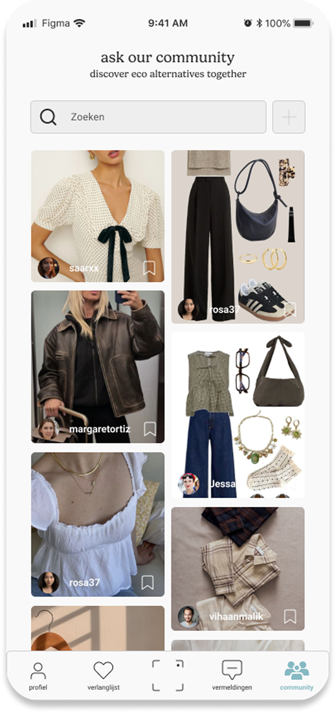
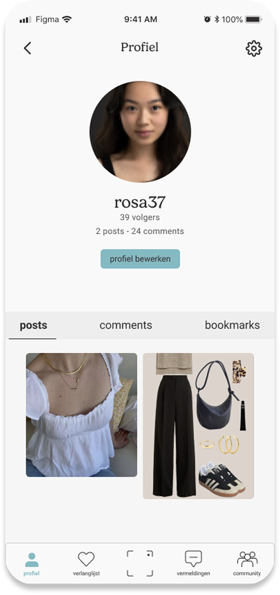
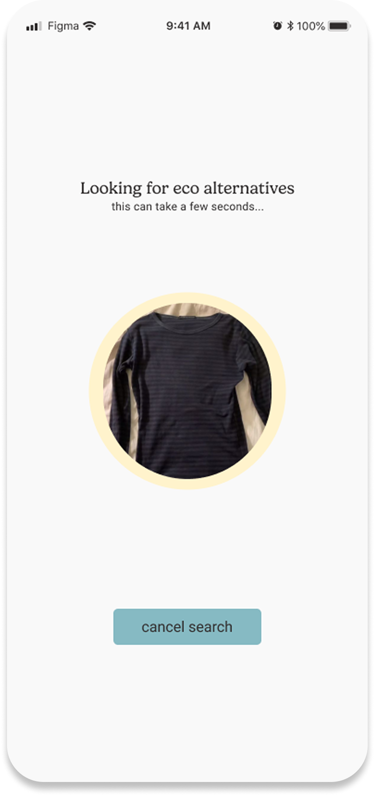
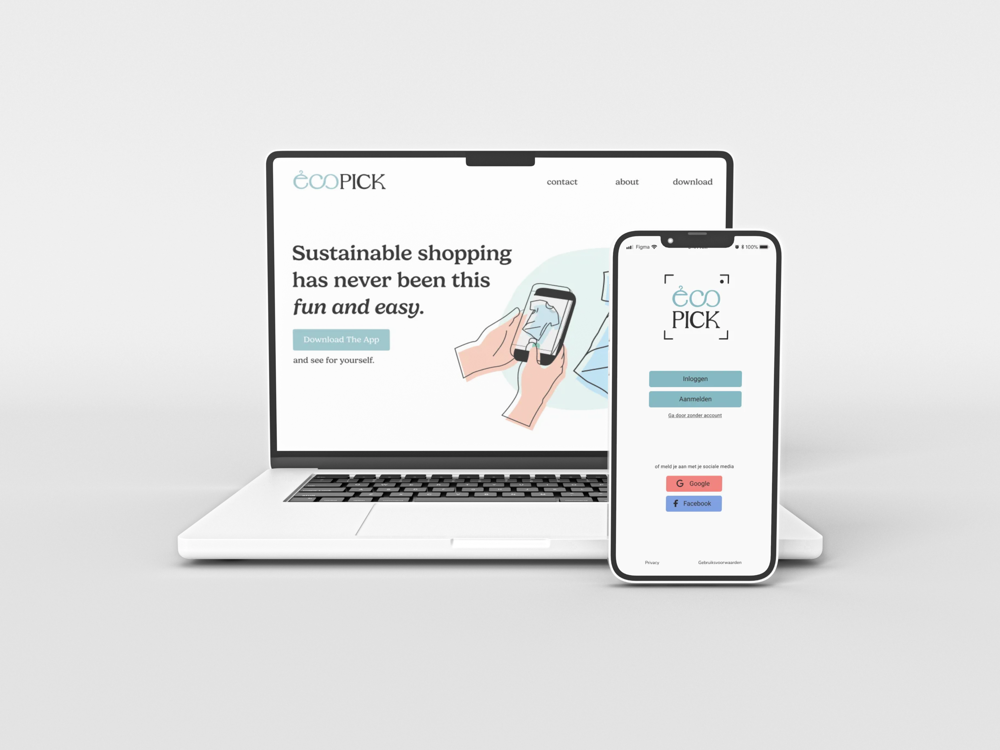

Ecopick
A mobile app that shows sustainable alternatives for clothing items using AI image recognition and a supportive community.
EcoPick is a mobile application concept developed as part of a sustainable fashion design challenge. The project explores how technology can help users make more conscious clothing choices by making sustainable alternatives easier to find, more accessible, and better aligned with personal style preferences. The idea emerged from the observation that while interest in sustainable fashion is growing, many users still struggle to actually find and choose sustainable alternatives in a fast and intuitive way.
During the research phase, the goal was to understand not only the environmental issues behind fast fashion, but also how users behave when making clothing decisions and where the main barriers lie in adopting more sustainable habits. This research revealed a clear gap between intention and action: while many consumers express interest in sustainable clothing, they often struggle to find accessible and visually appealing alternatives that match their personal style.
I made a mindmap organizing the research starting from sustainable fashion as the central topic and branching into key problems such as overconsumption, lack of accessibility, and fast fashion dependency, as well as potential opportunities like AI-based recommendations and second-hand integration. The moodboard defines the visual and emotional direction of the project, combining natural textures, fashion references, and modern digital aesthetics to establish the tone and identity that guided the development of the concept.


EcoPick was developed as a solution to this problem. The concept focuses on simplifying sustainable fashion discovery through an AI-powered system that recognizes clothing from images and suggests sustainable alternatives. The app is designed around three core ideas: accessibility, personalization, and guidance. Instead of forcing users to search manually, EcoPick allows them to simply upload an image of clothing they like and immediately receive relevant sustainable options.



The user experience is designed to be extremely intuitive, reducing the process of finding sustainable clothing to a few simple steps. Users upload an image, the system analyses it using AI, and relevant sustainable alternatives are presented immediately.

Once the structure and flow were defined, the concept was translated into high-fidelity screens. These focus on a clean and modern interface that prioritizes visual content, since image-based search is the core feature of the app.



The development of EcoPick demonstrates how a clear problem can evolve into a structured digital solution through research, ideation, and iterative design. Each stage contributed to shaping a concept that addresses the gap between sustainability awareness and practical application.s


Back to projects overview
Back
Next
Zuiderbad